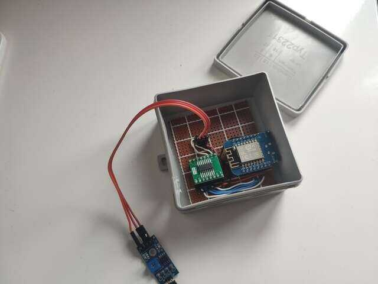
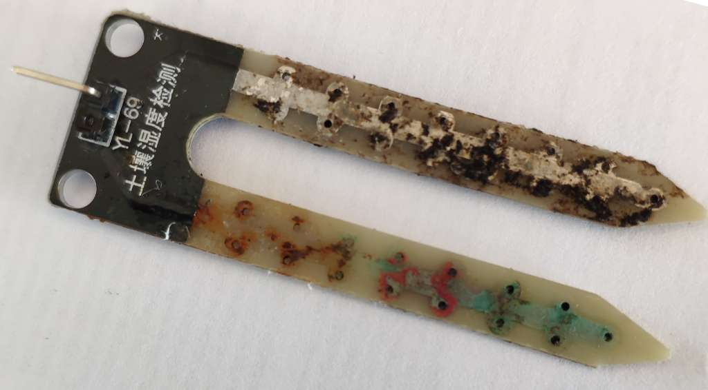

What
Monitoring Soil Moisture with a Wemos D1 Mini, MCP3008 and cheap soil moisture probe. Some years ago I bought roughly a dozen cheap plant soil moisture probes. In the following I’ll describe how to connect them to a Wemos D1 Mini Dev-Board with an mcp3008 Analog-Digital-Conveter and how to send messages with the readings to your Telegram chat client.
Contents
When
Situation
It took me some years to get around to actually doing this. The project is more useful than it is interesting.
I’ve used a very similar approach to monitor the in- and outlet temperature of our heating system and the temperature of an aging refrigerator.
Why
Motivation
We have quite a few plants though only the most robust ones surive. Each plant would ideally be watered based on its individual needs, but all too often we just see the leaves on one plant go brown after not watering them for weeks and then we dump a couple of liters into all plants.
The result is that the most robust plants do surivive, but not all of them look particularly healthy.
Depending on the plant it would be ideal to water them at recommended amounts and intervals per type of plant.
In order to achieve this it would be helpful if the plants could “talk” to us and remind us when they need more water, at what intervals and how much.
One could maintain equal intervals from experience for summer and winter, but the amount of water the plants require depends heavily on the temperature in the room and it changes dramatically depending on whether there is a lot of direct sun light or not.
The best way I came up to enhance this is to use the soil moisture sensors and program an IoT Wifi-Chip to send us a message on the Telegram messaging App.
Background
Hardware
For the refridgerator and heating system monitoring I’ve used 1-Wire ds18b20 temperatur probes that I had from my DIY 1-Wire Smart Home from ca. 2010 long before smart home consumer products were common. The sensors can be connected directly to the Wemos D1 chip with an Arduino library.
This time around we replace the 1-Wire temperature sensor with an mcp3008 Analog Digital Converter and the Soil Moisture Sensors.
Parts
In total we need:
- Soil Moisture Sensors (ca. 2.5 Eur)
- Wemos D1 Mini (ca. 3 Eur)
- mcp3008 soic16 Analog-Digital-Converter (ca. 3 Eur)
- Carrier board to solder the tiny soic16 chips (ca. 0,4 Eur)
Schematic
Wiring is straight-forward: Just connect the SPI lines.

We can connect a total of eight Soil Moisture Sensors to the analog input pins of the mcp3008.
How
Wiring
That schematic was first wired on a breadboard.
And later soldered to a perfboard.
Power
For power the Wemos D1 Mini can be connected to a simple 5V smartphone charger with Mini-USB.
For setups that are not near a wall plug we can use small smartphone power banks that usually contain 3.6V 18650-cells. These can also be built from 16850 cells from old laptop battery packs. There are voltage regulators that convert from 3.6V to 5V which effectively yields the same as a smartphone power bank.
To increase batterylife we could use the Wemos D1 Mini Deep-Sleep mode and only wake it up every hour or so, connect and send the data.
Enclosure
To protect from water and to protect from short circuit fires I like to throw these kind of projects into simple junction boxes.
Software
For the software I’ve taken the same code I had for previous projects.
Getting Data out
There are multiple approaches to getting data from an IoT device onto your phone or computer.
You could
- have an Mqtt-Server running and send mqtt messages to it
- have a webserver running and use http get/put-requests
- connect to a public IRC server and send messages to it or run your own IRC server for that purpose
I’ve done it all, but for me, in order to not have to maintain and pay for a server running 24/7 I like to use Telegram-Bots.
That way IoT devices send me chat messages directly to my phone and I don’t have to deal with the server setup and hosting fees.
Set up a bot in Telegram
Contact Botfather as per guide from Telegram to create a Telegram Bot and get a Bot ID.
Write to “@get_id_bot” to get your Chat ID that we can hard-code below to prevent unauthorized access.
Deploying code to Arduinos
Over the years I’ve used scripts instead of the Arduino IDE so I can quickly setup additional boards and libraries
With the below code saved as “software/software.ino” and the Wemos D1 Mini connected via USB, the following shell script will download all required Arduino libraries, compile and deploy the code to the Wemos D1 Mini.
#!/bin/bash
set -e
ACLI=<path-to-arduino-cli>/arduino-cli
# -- set up board manager url
echo "board_manager:" > arduino-cli.yaml
echo " additional_urls:" >> arduino-cli.yaml
echo " - http://arduino.esp8266.com/stable/package_esp8266com_index.json" >> arduino-cli.yaml
echo " - https://adafruit.github.io/arduino-board-index/package_adafruit_index.json" >> arduino-cli.yaml
# -- install wemos d1 board support
$ACLI core update-index --additional-urls http://arduino.esp8266.com/stable/package_esp8266com_index.json
$ACLI core install esp8266:esp8266
# -- add telegram bot library
$ACLI lib install "UniversalTelegramBot"
# -- add mcp3008 library
$ACLI lib install "Adafruit MCP3008"
# -- compile and upload code, then show serial monitor
$ACLI compile --fqbn esp8266:esp8266:d1_mini software/software.ino
$ACLI upload --fqbn esp8266:esp8266:d1_mini --port /dev/ttyUSB0 software/software.ino
$ACLI monitor -p /dev/ttyUSB0 -c baudrate=115200
Arduino Libraries
The deployment script automatically installs these libraries. For the code I’m using the following Arduino Libraries.
- ESP8266WiFi
- UniversalTelegramBot
- Adafruit_MCP3008
Writing the code
Create a file in software/software.ino.
We need the following headers for the Wemos D1 Mini, Wifi, the Telegram Bot and the mcp3008 Analog-Digital converter.
#ifdef ESP32
#include <WiFi.h>
#else
#include <ESP8266WiFi.h>
#endif
#include <WiFiClientSecure.h>
#include <UniversalTelegramBot.h>
#include <Adafruit_MCP3008.h>
Some configuration fields for you to fill out with your Wifi credentials, the Telegram Bot ID and your Telegram User ID.
// -- configuration
const char* ssid = "<Wifi SSID>";
const char* password = "<Wifi Password>";
#define BOT_TOKEN "<token from telegram botfather, number:letters>"
#define YOUR_CHAT_ID "<your-id-from-@get_id_bot>"
With the following configuration the Bot will check for new messages once per second. If you’ve sent “/state” it will send the readings immediatly.
Otherwise it will automatically send readings every 30 minutes. This is useful to see if the bot is still running after a longer time unattended.
const unsigned long CHECK_MESSAGE_DELAY = 1000;
const unsigned long AUTO_SEND_DELAY = 30*60;
Some global variables for tracking state
WiFiClientSecure client;
UniversalTelegramBot bot(BOT_TOKEN, client);
Adafruit_MCP3008 adc;
int counter = AUTO_SEND_DELAY;
unsigned long lastRunTime = 0;
to send and receive Telegram messages in a semi-colon separated format so we can copy it to a spreadsheet for analysis easily.
I like to add the physical Address of the Wifi-Chip in order to be able distinguish multiple Wemos D1 Mini from each other.
void sendValues() {
String mac_addr = WiFi.macAddress();
mac_addr.replace(":","");
String postData = "mac_addr=" + mac_addr + ";";
for(int i=0; i < 8; i++) {
postData += "sensor_" + String(i);
postData += "=" + String(adc.readADC(i)) + ";";
}
bot.sendMessage(YOUR_CHAT_ID, postData, "");
}
void handleNewMessages(int numNewMessages) {
for (int i=0; i<numNewMessages; i++) {
if (String(bot.messages[i].chat_id) != YOUR_CHAT_ID) {
bot.sendMessage(YOUR_CHAT_ID, "Unauthorized user", "");
continue;
}
if (bot.messages[i].text == "/state") {
sendValues();
}
}
}
The setup and loop functions connect to the Wifi, get time from the NTP time server and routinely check for messages on Telegram.
If a message with the /state command is received, the Bot will respond with the current readings.
It also auto-sends readings every half hour.
void setup() {
Serial.begin(115200);
// -- ignore cerificates
client.setInsecure();
// -- set time server
#ifdef ESP8266
configTime(0, 0, "pool.ntp.org");
#endif
// -- WiFi
WiFi.mode(WIFI_STA);
WiFi.begin(ssid, password);
while (WiFi.status() != WL_CONNECTED) {
delay(1000);
Serial.println("Connecting to WiFi..");
}
// -- print IP
Serial.println(WiFi.localIP());
adc.begin();
counter = AUTO_SEND_DELAY;
lastRunTime = millis() - CHECK_MESSAGE_DELAY;
}
void loop() {
if (millis() > lastRunTime + CHECK_MESSAGE_DELAY) {
Serial.print(".");
// -- receive messages
int numNewMessages = bot.getUpdates(bot.last_message_received + 1);
while(numNewMessages) {
handleNewMessages(numNewMessages);
numNewMessages = bot.getUpdates(bot.last_message_received + 1);
}
// -- automatic send values
if(counter == 0) {
counter = AUTO_SEND_DELAY;
sendValues();
}
counter--;
lastRunTime = millis();
}
}
Progress
As you can see the messages are delivered to my phone. Mission accomplished.
From trying it out I know what the values approximately mean:
- 1020 = completly dried up soil
- 982 = connected the leads by placing a finger on it
- 502 = soil is basically under water
- <100 = probably not connected
- 0 = not connected or full contact e.g. by direct connection of a wire
In order to further improve we could customize the messages to hold more informational value.
- label the plants
- have a message sent only when it’s time to water that specific plant by checking if the value is below a set threshold
- specify approximately how much water is required
- set respective watering intervals e.g. some plants are meant to dry up every once in a while
Currently I’m using these Blumat suction things.
They automatically pull water from a bottle, but are hard to properly adjust. The soil moisture sensor helps adjusting them and seeing how the plants react.
A further improvement could be to add a small drip pump controlled by relay instead to water the plants.
Update 2024-04-21
The readings were way off and so I investigated. Seems the probes on the sensors have completly disintegrated due to corossion. The connection pins break off and the traces on the boards are practically gone.
Seems the companies behind these probes don’t seem to expect anyone would seriously use them in projects. Many DIYs order things, myself included - these probes are probably 3 years old - and never get around to using them for a long time or ever. And so the company either had no idea what they were doing or thought they can get away with using coroding material on a plant sensor.
The part is very basic. I’ll probably just use something that doesn’t corrode like copper wires or aluminium rods with some 3D printed part to keep them at an equal distance and will connect the sensor boards to that.
